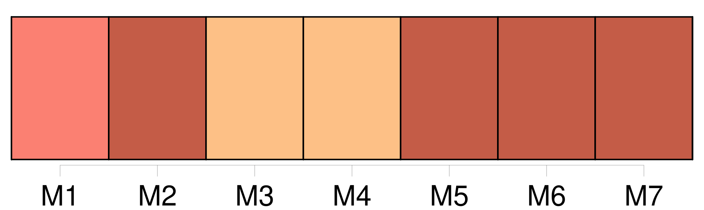
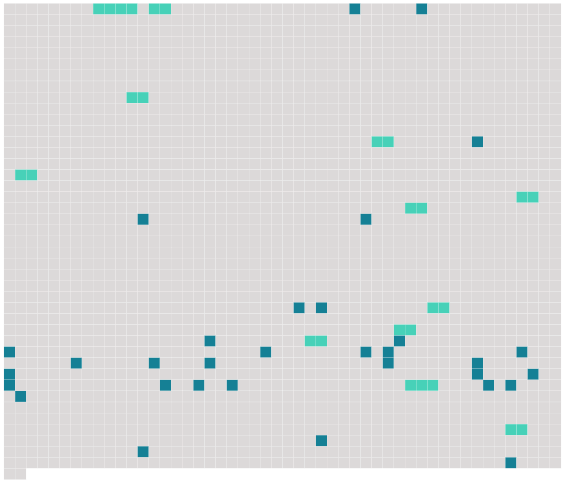

Longueur nb maillons : 44 mentions |
  |
Fille de colons espagnols, elle avait épousé [un Français nommé Pontabèze] [Son mari] était employé de l'État. Je n'ai jamais su bien au juste quelles fonctions [il] remplissait.
Je constatai qu' [il] était fort occupé, et je n'en demandai pas plus long. [11 phrases] Quelquefois elle revenait le soir, [son mari] étant de service je ne sais où. [5 phrases] --Oui, quand [mon mari] sera parti, tu viendras dormir à [sa] place. [7 phrases] Et quand j'embrasserai [mon mari] , il me semblera que ce sera toi. [6 phrases]
Son désir me semblait tellement singulier que je ne me l'expliquais point ; puis, en y songeant, je crus démêler quelque haine profonde contre [son mari] , une de ces vengeances secrètes de femme qui trompe avec délices l'homme abhorré, et le veut encore tromper chez lui, dans ses meubles, dans ses draps. Je lui dis : --« [Ton mari] est très méchant pour toi?? [2 phrases] --Mais tu ne [l'] aimes pas, toi?? [1 phrases]
« Si, je [l'] aime beaucoup, au contraire, beaucoup, beaucoup, mais pas tant que toi, mon coeurrr, » [14 phrases] Je repris enfin mon assurance et je le lui prouvai de tout mon pouvoir, si bien qu'au bout de deux heures nous ne songions guère encore au repos, quand des coups violents frappés soudain contre la porte nous firent tressaillir ; et une voix forte d'homme cria : --« Marroca, [c'] est [moi]
» [4 phrases] Je l'entendis ouvrir une armoire, la fermer, puis elle revint, apportant un objet que je n'aperçus pas, mais qu'elle posa vivement quelque part ; et, comme [son mari] perdait patience, elle répondit d'un voix forte et calme : --« Je ne trrrouve pas les allumettes ; » puis soudain : --« Les voilà, je [t'] ouvrrre. [1 phrases] [L'homme] entra. Je ne vis que [ses] pieds, des pieds énormes.
Si le reste se trouvait en proportion, [il] devait être un colosse. J'entendis des baisers, une tape sur de la chair nue, un rire ; puis [il] dit avec un accent marseillais : --« [Zé] oublié [ma] bourse, té, il a fallu revenir. Autrement, [je] crois que tu dormais de bon coeur.
» [Il] alla, vers la commode, [chercha] longtemps ce qu'il [lui] fallait ; puis Marroca s'étant étendue sur le lit comme accablée de fatigue, [il] revint à elle, et sans doute [il] essayait de la caresser, car elle [lui] envoya, en phrases irritées, une mitraille d'XXXrXXX furieux. [2 phrases] Comme [il] ne réussissait pas en [ses] projets, [il] se vexa. --« Tu es bien méçante aujourd'hui », dit [-il] Mais [il] en prit [son] parti. [1 phrases]
» Un nouveau baiser sonna ; puis [les gros pieds] se retournèrent, me [firent] voir [leurs] clous en s'éloignant, [passèrent] dans la pièce voisine ; et la porte de la rue se referma. [10 phrases]
« Et si [ton mari] m'avait vu », lui demandai -je. [4 phrases] Il [lui] suffisait de se baisser pour me trouver. [1 phrases] « [Il] ne se serait pas baissé. [4 phrases]
» |
 |
La ressource peut être téléchargée sur la page Ortolang
Si vous avez des questions ou vous voyez des erreurs, merci d'envoyer un mail à silvia.federzoni89@gmail.com
Site développé par S. Federzoni (contact)